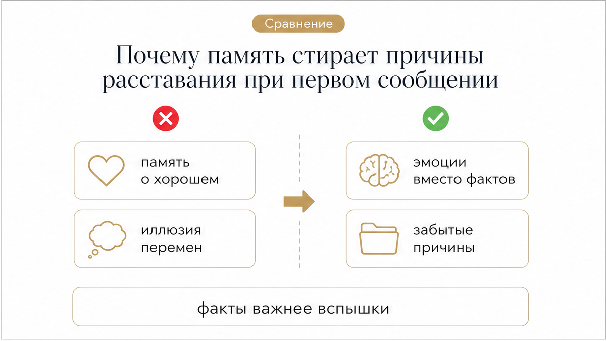
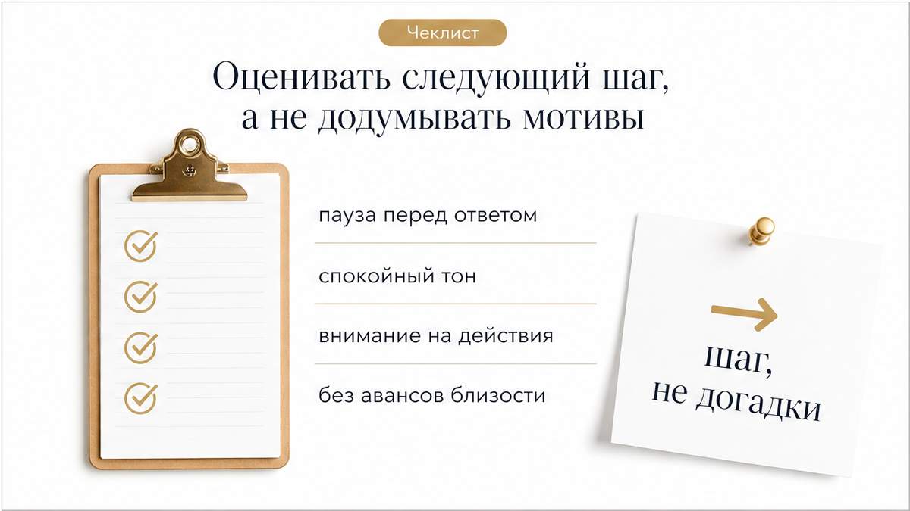

Месяцы тишины уже успели стать привычной реальностью: переписка ушла далеко вниз списка диалогов, а мысли о прошлом перестали занимать каждый вечер. И вдруг на экране смартфона всплывает уведомление с его именем и коротким текстом: «Привет, как дела?». В этом сообщении нет ни объяснения долгого отсутствия, ни признания ошибок, ни конкретного предложения встретиться. Разберём этот конкретный пример, чтобы отделить внезапное появление в сети от реального желания строить зрелые отношения.
Когда человек объявляется после долгой паузы без конкретных предложений, важно не погружаться в бесконечные догадки, а трезво оценить факты. С картами Таро в такой ситуации полезно разобрать три ключевых вопроса:
Разобрать скрытые мотивы и перспективу помогает расклад «Суть – Тень – Вектор» и глубокий аудиоразбор ситуации. Вы можете запустить расклад в приложении ВКонтакте или открыть анализ связок в приложении MAX.

Первая реакция на неожиданное появление человека из прошлого почти всегда эмоциональна. Память устроена так, что при виде знакомого имени она склонна мгновенно подсовывать приятные воспоминания — первые свидания, теплоту и яркие моменты. При этом реальные причины долгой паузы, взаимное непонимание и дни глухого молчания словно отходят на второй план.
Важно помнить: прошлое не возвращается автоматически изменившимся. Одно нейтральное слово не исправляет старых проблем. Если человек хочет вернуться в вашу жизнь, ему предстоит реальными поступками доказать, что прежний негативный сценарий не повторится.
Появление текста на экране — это лишь факт отправки сообщения, а не готовность брать на себя ответственность за союз. Практика показывает, что за внезапным «привет» без конкретики чаще всего стоят три бытовые причины:
Ни один из этих мотивов не содержит продуманного плана на будущее. Пока нет конкретных шагов, появление мужчины остаётся всего лишь проверкой вашей реакции.

Главная ловушка в такой момент — попытка угадать скрытые мысли мужчины. Карты Таро и здравый смысл говорят об одном: оценивать нужно только реальные действия и факты. Вместо того чтобы строить гипотезы о его чувствах, обратите внимание на то, как он ведёт себя дальше.
Готов ли он открыто обсудить причину исчезновения? Предлагает ли конкретное время и место для встречи? Учитывает ли ваше удобство? Если после вашего нейтрального ответа диалог снова переходит в вялую переписку ни о чём, значит, за этим возвращением не стоит никакого серьёзного намерения.
Чтобы не потерять внутреннюю опору и сохранить ясность, придерживайтесь понятной последовательности действий:
Мы не читаем мысли в чужой голове, но расклад помогает объективно взглянуть на происходящее между вами. Символическая система Таро выявляет теневые стороны ситуации, скрытые противоречия и вектор дальнейшего развития событий, отделяя минутную скуку от осознанного намерения.
Если внезапное сообщение после месяцев молчания лишило вас спокойствия и вы сомневаетесь, стоит ли продолжать этот контакт, не оставайтесь наедине с тревожными мыслями. Расклад «Суть – Тень – Вектор» объективно подсветит реальную динамику отношений, а подробный аудиоразбор связок карт поможет принять взвешенное решение без иллюзий. Запустите расклад прямо сейчас в приложении ВКонтакте или используйте приложение в сервисе MAX.